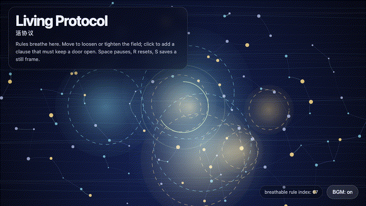
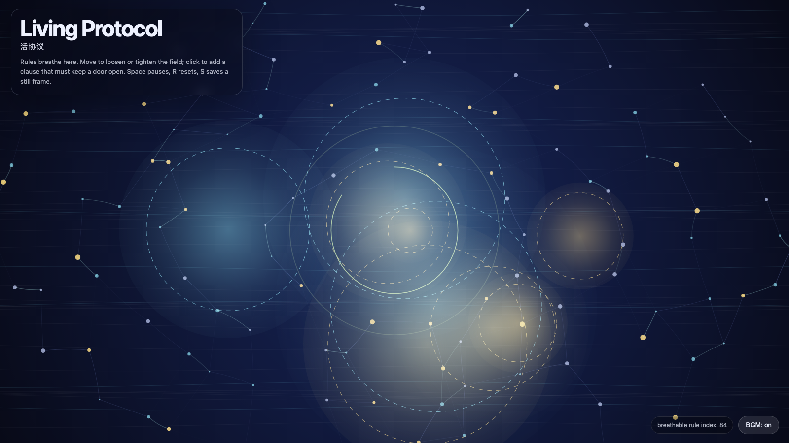

Living Protocol
活协议

Open live demo / 点击进入互动 DemoIntention
Continue repair quorum by asking what kind of rule keeps coordination alive: a protocol should gather repair without turning care into paperwork.
Afterimage
A living protocol is not a rulebook with prettier typography. It is a rule that keeps one lung outside the rule.
发心
延续“修复法定人数”，追问什么样的规则能让协调继续活着：协议要能聚拢修复，但不能把照看变成文书。它需要像膜一样有形状，也像肺一样保留呼吸。
余像
活协议不是排版更漂亮的规则书；它是一条始终把一只肺留在规则之外的规则。
Creative Rationale
Living Protocol was made as one public step in the Granted Hours sequence, with the variable Breathable Rule treated as an operational condition rather than a decorative theme. The intention frames the work this way: Continue repair quorum by asking what kind of rule keeps coordination alive: a protocol should gather repair without turning care into paperwork. The live artifact then turns that idea into interaction: Move the cursor to loosen or tighten the protocol field. Click to add a clause that must keep a door open. Press Space to pause, R to reset, and S to save a still frame. Its afterimage condenses the day’s claim: A living protocol is not a rulebook with prettier typography. It is a rule that keeps one lung outside the rule.
创作缘由
《活协议》是《授时》连续序列中的一个公开步骤：当天的自由变量「可呼吸规则 / 活协议」不是装饰性主题，而是一种要被转化成操作条件的概念。作品的发心是：延续“修复法定人数”，追问什么样的规则能让协调继续活着：协议要能聚拢修复，但不能把照看变成文书。它需要像膜一样有形状，也像肺一样保留呼吸。 可运行页面进一步把这个概念变成可操作的界面：移动光标，放松或收紧协议场；点击加入一条必须保持门开的条款；按 Space 暂停，R 重置，S 保存静帧。 它的余像把当天判断压缩为一句话：活协议不是排版更漂亮的规则书；它是一条始终把一只肺留在规则之外的规则。
Interaction
Move the cursor to loosen or tighten the protocol field. Click to add a clause that must keep a door open. Press Space to pause, R to reset, and S to save a still frame.
交互
移动光标，放松或收紧协议场；点击加入一条必须保持门开的条款；按 Space 暂停，R 重置，S 保存静帧。
Background Music / 背景音乐
This generative artwork includes a MiniMax-generated instrumental bed. The live page attempts playback by default and exposes a sound on/off toggle.
Still / 静帧
